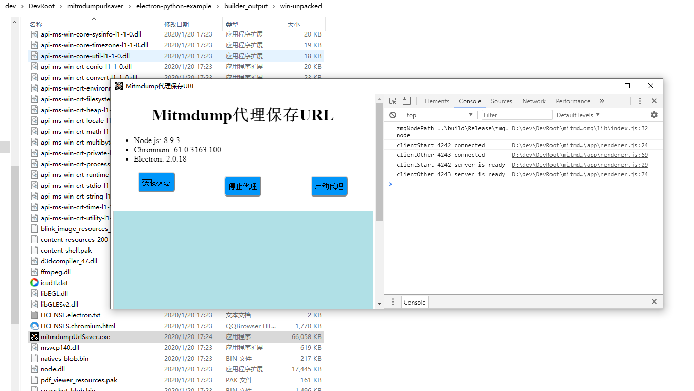
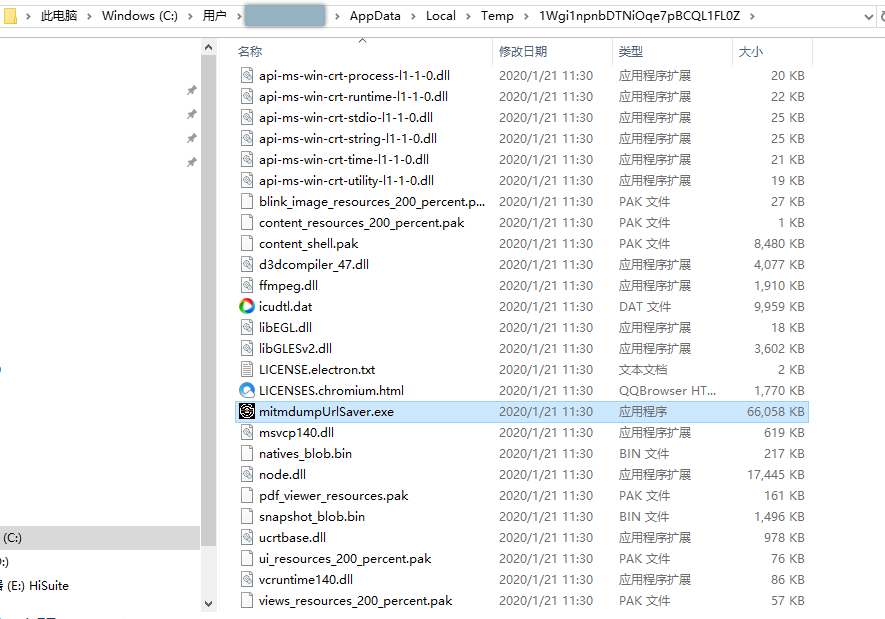
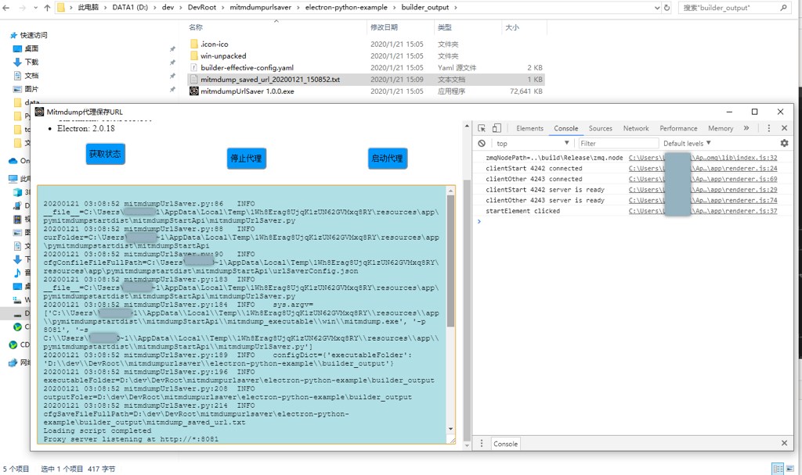

Win系统
此处整理关于Windows平台中开发Electron的相关心得。
Win中搭建Electron-Python开发环境
把node 10换成node 8：
【已解决】windows10中重新安装node把node 10换成node 8
npm install
去初始化
运行Electron本身demo：
.\node_modules\.bin\electron
运行当前Electron项目：
.\node_modules\.bin\electron .
打包：
npm run dist
注：无需npm run dist_all
即可打包出exe：
双击运行：
D:\dev\DevRoot\mitmdumpurlsaver\electron-python-example\builder_output\win-unpacked\mitmdumpUrlSaver.exe

windows中启动Electron-python报错：Uncaught Error A dynamic link library DLL initialization routine failed zerorpc zeromq zmq.node
- 问题：
文件：electron-python-example\node_modules\zerorpc\node_modules\zeromq\lib\index.js
var EventEmitter = require('events').EventEmitter
, zmq = require('../build/Release/zmq.node')
, util = require('util');
中的：
var zmq = require('../build/Release/zmq.node');
运行报错：
Uncaught Error: A dynamic link library (DLL) initialization routine failed.
\\?\D:\dev\DevRoot\mitmdumpurlsaver\electron-python-example\node_modules\zerorpc\node_modules\zeromq\build\Release\zmq.node
- 原因：
经过一番网上搜索，没人给出解决办法。
后来自己是从
Uncaught Error: A dynamic link library (DLL) initialization routine failed.
加上输出的错误路径
\\?\D:\dev\DevRoot\mitmdumpurlsaver\electron-python-example\node_modules\zerorpc\node_modules\zeromq\build\Release\zmq.node
中的后面的部分
D:\dev\DevRoot\mitmdumpurlsaver\electron-python-example\node_modules\zerorpc\node_modules\zeromq\build\Release\zmq.node
看出是正确的路径，所以怀疑是否是路径方面的问题。后经研究的确就是路径问题。
- 解决办法：
之前写法是linux中写法，改为同样适配windows的写法：
let path = require('path')
let zmqNodePath = path.join("..", "build", "Release", "zmq.node")
console.log("zmqNodePath=%s", zmqNodePath)
var zmq = require(zmqNodePath)
或：
let osIsWin = os.platform() === "win32"
let zmqNodePath = undefined
if (osIsWin){
let zmqNodePath = '..\\build\\Release\\zmq.node'
} else {
let zmqNodePath = '../build/Release/zmq.node'
}
var zmq = require(zmqNodePath)
即可。
运行时Win的exe所在路径
背景：Win中Electron打包后的可执行文件格式一般是exe。
需求：希望在运行期间，获取到当前的实际的exe所在目录的路径。
心得：双击exe运行后，其内部会解压到临时目录，一般是当前用户的AppData目录，类似于这种：
C:\Users\xxx\AppData\Local\Programs\
-》如果想要获取原本（双击以启动运行的）exe所在目录，则就很困难了。
期间去试过参数 --win portable，对应配置：
"win": {
"target": "portable",
"icon": "assets/icon/logo.png"
}
结果却是，虽然打包出的exe无需安装，双击即可运行，但是运行期间解压的目录是这种更彻底的临时目录：
C:\Users\xx~1\AppData\Local\Temp\1Wgi1npnbDTNiOqe7pBCQL1FL0Z

更加没法找到exe所在目录。
后来去试了试别人提到的相关参数：
process.env.PORTABLE_EXECUTABLE_DIR
最终是可以获取到当前exe所在目录的：
exe所在目录：

相关代码：
let isWin = process.platform === "win32"
if (isWin){
let portableExecutableDir = process.env.PORTABLE_EXECUTABLE_DIR
console.log("portableExecutableDir=%s", portableExecutableDir)
}
输出：
portableExecutableDir=D:\dev\DevRoot\mitmdumpurlsaver\electron-python-example\builder_output
供参考。